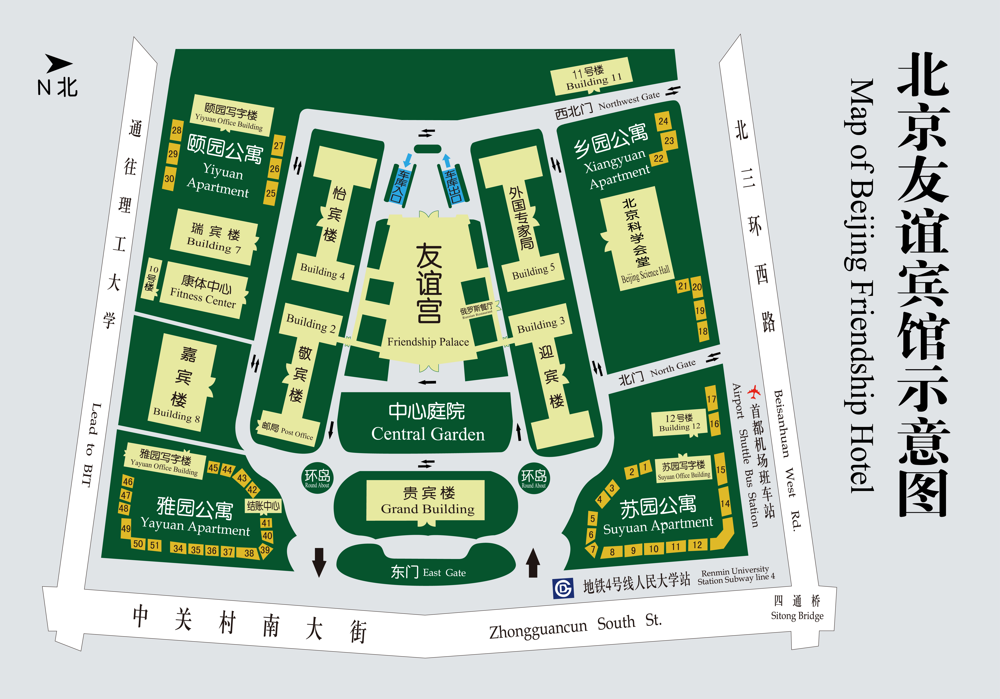
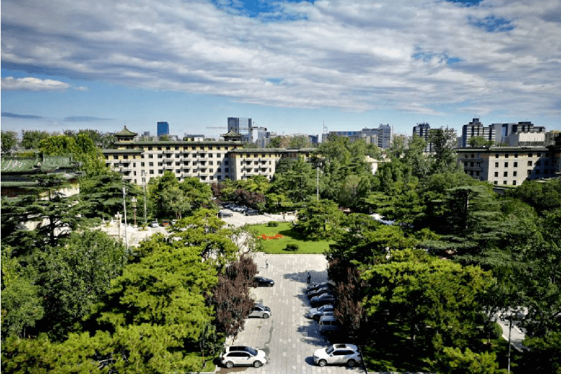
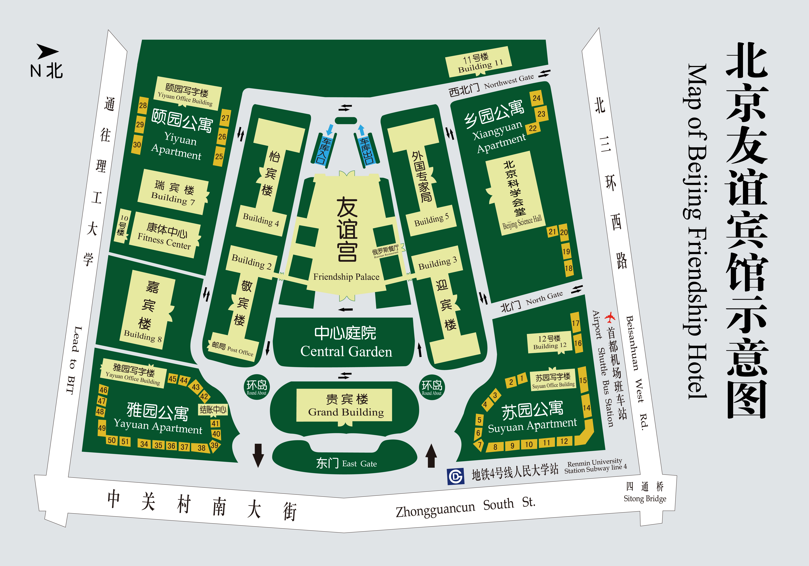
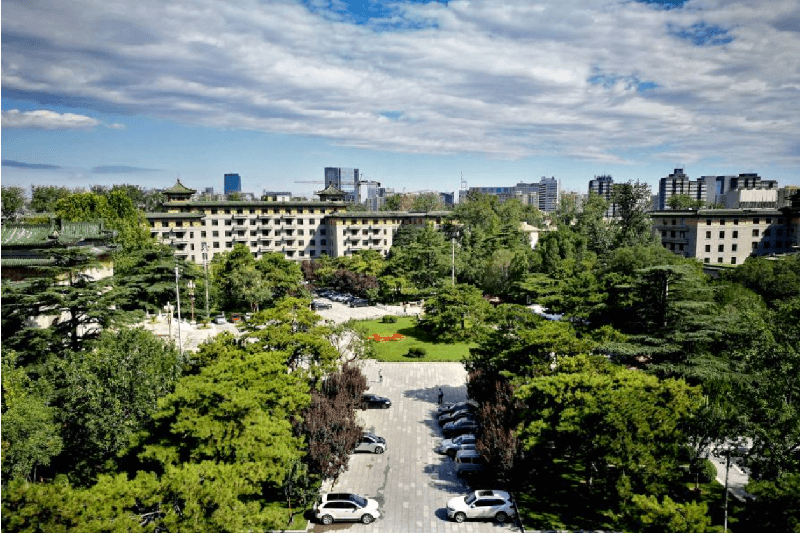

Background
Digital Earth makes use of various forms of digital technologies to understand and model physical and human spaces, and plays a crucial role in sustainable development. Since launched by the United Nations in 2015, the Sustainable Development Goals (SDGs) become a universal call to action to protect the planet and improve the lives and prospects of everyone in the world. How to utilize advanced digital technologies to achieve SDGs becomes increasingly important. Under this context, the International Society for Digital Earth and the Aerospace Information Research Institute Chinese Academy of Sciences will host “The 1st Youth Innovation Forum on Digital Earth” on August 21-23, 2023 in Beijing, China. The theme of the Forum is “Digital Earth in Support of Global Sustainable Development”. The Forum welcomes young researchers, scholar and graduate students in the field of Digital Earth and related disciplines to participate and present their cutting-edge research outcomes.
Theme
Digital Earth in Support of Global Sustainable Development
Date & Location
Location: Beijing Friendship Hotel in Beijing, China
Notices
{kind=link}
{kind=link}
{kind=link}
{kind=link}
Hosters
- International Society for Digital Earth
- International Research Center of Big Data for Sustainable Development Goals
- Aerospace Information Research Institute, Chinese Academy of Sciences
Organizers
- International Society for Digital Earth - Young Scientist Innovation Network
- Nanjing Normal University
Main Topics
- Modeling of Geographic World in Open Web Environment
- Cooperation in Intergrating of Geo-analysis Models
- Spatio-Temporal Modelling and Integration
- Interoperability, Reusability, and Integrated Systems
- Information Technology for Sharing and Integrating Geo-analysis Models
- Visualization of Geographical Data and Interaction of Geo-analysis Models
- Tools and Methods of Participatory Modelling
- Geographic Modeling as a Key Component in VGE
Committees
Academic Committee
-
Chair:Prof. Huadong Guo, International Research Center of Big Data for Sustainable Development Goals
Prof. Alessandro Annoni, International Society for Digital Earth
-
Members:Prof. Temenoujka Bandrova, University of Architecture, Civil Engineering and Geodesy
Prof. Arzu Çöltekin, University of Applied Sciences and Arts Northwestern Switzerland
Prof. Carlos Antonio da Silva Junior, State University of Mato Grosso
Prof. Cheryl Desha, Griffith University
Prof. Eugene Eremchenko, Lomonosov Moscow State University
Prof. Hiromichi Fukui, Chubu University
Prof. Gregory Giuliani, University of Geneva
Prof. Michael F. Goodchild, Arizona State University
Prof. Changchun Huang, Principal Investigator at Masaryk University
Prof. Milan Konecny, Masaryk University
Prof. Kamal Labbassi, Chouaib Doukkali University
Prof. Hui Lin, Jiangxi Normal University
Dr. Joan Masó, Centre for Ecological Research and Forestry Applications, Universitat Autònoma de Barcelona
Dr. Paolo Mazzetti, Institute of Atmospheric Pollution Research (National Research Council of Italy)
Prof. Graciela Metternicht, Western Sydney University
Dr. Zaffar Sadiq Mohamed-Ghouse, Woolpert, Australia
Dr. Stefano Nativi, National Research Council of Italy
Prof. Luis Perez-Mora, Griffith University
Prof. Faramarz Samavati, Professor of Computer Science, University of Calgary
Dr. Sven Schade, Joint Research Centre, European Commission
Dr. Richard Gordon Simpson, Meta Moto, Australia
Prof. Josef Strobl, Paris Lodron University Salzburg
Prof. Mario Hernandez Valdes, International Society for Digital Earth
Prof. Cuizhen (Susan) Wang, University of South Carolina
Prof. Linwang Yuan, Nanjing Normal University
-
Forum Chair:Prof. Changlin Wang, International Society for Digital Earth
Organizing Committee
-
ChairProf. Min Chen, Nanjing Normal University, China
-
Members:Dr. Linlin Guan, Aerospace Information Research Institute, Chinese Academy of Sciences
Ms. Min Li, International Society for Digital Earth
Dr. Jian Lin, The Chinese University of Hong Kong
Ms. Jingna Liu, Aerospace Information Research Institute, Aerospace Information Research Institute, Chinese Academy of Sciences
Dr. Zhen Liu, Aerospace Information Research Institute, Chinese Academy of Sciences
Ms. Ya Tian, Jiangxi Normal University
Mr. Zifeng Yuan, Nanjing Normal University
Mr. Renyu Chen, Nanjing Normal University
Forum Language
English is the presenting language of the forum.
Forum Topics
We welcome topics in Digital Earth and Sustainable Development and also encourage papers on new and emerging themes including but not limited to:
-
Sustainable Development Goals Interaction Study
-
Sustainable Development Process Monitoring
-
Climate Change and Health
-
Building Green and Resilient Cities (SDG 11)
-
Clean Energy: The Transition to Low Carbon Energy
-
Building Sustainable Food Systems (SDG 2)
-
Sustainable use of terrestrial ecosystems
-
Sustainable Development and “One Health”
-
Integrated Water Resources Management (SDG 6)
-
Regional Sustainable Development and Policy Guidance
-
Global partnerships for sustainable development
Keynote Speakers

Dr. László Bertalan
Department of Physical Geography and Geoinformatics, University of Debrecen, Hungary
E-mail: bertalan@science.unideb.hu
Webpage: https://sites.google.com/view/laszlobertalangeo

Dr. Bin Chen
Faculty of Architecture, The University of Hong Kong, Hong Kong, China
Email: binley.chen@hku.hk
Webpage: https://fuselab.hku.hk/

Dr. Prajal Pradhan
Potsdam Institute for Climate Impact Research, Germany
Phone: +49 331 288 2046
Webpage: www.pik-potsdam.de/members/pradhan

Dr. Martin Sudmanns
Department of Geoinformatics, University of Salzburg, Austria
E-mail: martin.sudmanns@plus.ac.at

Dr. Huaiyu Tian
The Global Change and Public Health Research Center, Beijing Normal University, China
E-mail: tianhuaiyu@bnu.edu.cn

Dr. Yongguang Zhang
The International Institute for Earth System Sciences, Nanjing University, China
E-mail: yongguang_zhang@nju.edu.cn
Webpage: https://ecors.nju.edu.cn/
Overall Schedule
| Date | Time | Content | Venue |
|---|---|---|---|
| Aug 21 | 09:00-21:00 | Registration | Building 4 |
| Aug 22 | 07:30-08:30 | Registration | Friendship Palace, Juxian Ballroom |
| 08:30-08:45 | Openning Ceremony | Friendship Palace, Juxian Ballroom | |
| 08:45-12:25 | Keynotes | Friendship Palace, Juxian Ballroom | |
| 12:25-14:00 | Lunch Buffet | Friendship Palace, First Floor Restaurant | |
| 14:00-17:45 | Parallel Sessions | Friendship Palace, Meeting Room 3, 5, 7, 9 | |
| 18:00-20:00 | Welcoming Banquet | Friendship Palace, Juxian Ballroom | |
| Aug 23 | 08:30-11:45 | Parallel Sessions | Friendship Palace, Meeting Room 3, 5, 7, 9 |
| 11:45-14:00 | Lunch Buffet | Friendship Palace, First Floor Restaurant | |
| 14:00-15:40 | Parallel Sessions | Friendship Palace, Meeting Room 3, 5, 7, 9 | |
| 15:40-16:10 | Awards Announcement & Closing Ceremony | Friendship Palace, Meeting Room 5 |
Important Dates
-
Abstract due:
15 July, 2023.11 August, 2023 -
Abstract acceptance notice:
18 July, 2023.14 August, 2023. -
Registration starts on: 27 June, 2023.
-
Registration ends on: 21 August, 2023.
Sessions
| Conveners | Session titles |
|---|---|
| Session 1 Study on the Interaction among Sustainable Development Goals | |
| Dr. Junze Zhang | Research Center for Eco-Environmental Sciences, CAS |
| Prof. Min Cao | Nanjing Normal University |
| Session 2 Big Earth Data in Promote of Marine and Coastal Sustainable Development (SDG 14) | |
| Dr. Mingming Jia | Northeast Institute of Geography and Agroecology, CAS |
| Prof. Hongsheng Zhang | The University of Hong Kong |
| Session 3 Spatial Technologies Facilitate the Conservation and Sustainable Development of Natural and Cultural Heritage (SDG11 &SDG15) | |
| Dr. Lei Luo | International Research Center of Big Data for Sustainable Development Goals |
| Dr. Jinhu Bian | Institute of Mountain Hazards and Environment, CAS |
| Session 4 Intelligent Monitoring and Evaluation of Agricultural Land Systems | |
| Dr. Lijun Zuo | Aerospace Information Research Institute, CAS |
| Dr. Qiangyi Yu | Institute of Agricultural Resources and Regional Planning, CAAS |
| Prof. Baodong Xu | Huazhong Agricultural University |
| Session 5 Regional Sustainable Development and Sustainability Transitions | |
| Prof. Shuangshuang Tang | Nanjing Normal University |
| Prof. Xiaohui Hu | Nanjing Normal University |
| Prof. Xiyan Mao | Nanjing University |
| Session 6 Regional Sustainable Development and Strategies | |
| Prof. Yali Liu | Beijing Forestry University |
| Dr. Xutong Wu | Beijing Normal University |
| Session 7 Geospatial Big Data Analytics and AI for Public Health | |
| Prof. Wei Luo | National University of Singapore |
| Dr. Ling Yin | Shenzhen Institutes of Advanced technology, CAS |
| Session 8 Big Earth Data in Support of Sustainable Urban Development | |
| Dr. Zhongchang Sun | International Research Center of Big Data for Sustainable Development Goals |
| Dr. Zhonghao Zhang | Shanghai Normal Univerisity |
| Session 9 Advancements and Challenges in One Health Studies leveraging Big Earth Data | |
| Dr. Jinwei Dong | Institute of Geographic Sciences and Natural Resources Research, CAS |
| Dr. Cunrui Huang | Tsinghua University |
| Session 10 Key Technologies and Paths for Achieving the Global SDG7 Affordable and Clean Energy Goal | |
| Dr. Mingquan Wu | Aerospace Information Research Institute, CAS |
| Dr. Rui Zhu | Institute of High Performance Computing, Agency for Science, Technology and Research, Singapore |
| Session 11 Novel Monitoring Methods in Remote Sensing of Surface Water | |
| Prof. László Bertalan | University of Debrecen, Hungary |
| Dr. Junsheng Li | Aerospace Information Research Institute, CAS |
| Session 12 Climate Change and Environmental Public Health | |
| Prof. Ming Luo | Sun Yat-Sen University |
Abstract Solicitation
Excellent Paper Award
- The paper being submitted for EPA evaluation must not have been published.
- EPA applicants must orally present their papers in the forum.
- A candidate should be a graduate student, or a young scholar less than 45 ages.
- The winners of EPA will be announced in the closing ceremony.
To apply for the Excellent Paper Award (EPA), authors must submit a full-length research PAPER (5000-8000 words) through the online submission system: http://isde_ysin2023.digitalearth-isde.org/
Young Scientist Award
- Outstanding accomplishments of young individuals
- Actively serving and contributing to the field of Digital Earth in particular and the scientific community in general
- Age <= 45 & Member of YSIN-ISDE
The Young Scientist Innovation Network (YSIN) Young Scientist Awards are established by the International Society for Digital Earth (ISDE) to recognize and honor outstanding young scientists who are proactive and passionate in the field of Digital Earth and who develop crucial concepts and innovative technologies to affect our society and environment.
Each year, 2-3 award-winners will be selected by the awards committee through the competitive and rigorous evaluating procedure. The rules and criteria for the selection include, but are not limited to, the following:
Applicants should submit his/her detailed CV and Statement of Application (which outlines his/her accomplishments and contributions) to ISDE_YSIN@163.com before 11 August, 2023. The winners of the Young Scientist Award will be announced in the closing ceremony.
Registration Fees
| Type | US$ / RMB￥ |
|---|---|
| Student | $150 / ￥1000 |
| ISDE-YSIN member | $240 / ￥1600 |
| Non ISDE-YSIN member | $280 / ￥1800 |
Payment Methods
Account Name: The International Society for Digital Earth(ISDE) (账户名称：国际数字地球协会)
Account opening bank: INDUSTRIAL AND COMMERCIAL BANK OF CHINA(ICBC), Beijing North Beach Sub-branch (开户行：中国工商银行北京北沙滩支行)
Account Number: 0200244509200015729 （账号：0200244509200015729）
Payment by credit card on the day of registration (rates refer to the standard after June 21)
Electronic invoices are available.
1. Attendees should pay the registration fee according to the Registration-Registration Fee.
(*)2. If paying through EFP, be sure to note conference information (ISDE_YSIN), your name, phone number and affiliation when paying registration fee, otherwise it will not be possible to verify your participation information
Visa Reminder
Residents of most countries require a visa to enter the People's Republic of China. Please check the details of your visa application with the Chinese Embassy or Consulate General or the China Visa Application Center (CVASC) in your place of residence as early as possible. For some visa applications, the process may take some time to complete, depending on your country of origin and certain visa restrictions. Therefore, it is recommended that you apply at least one month prior to your departure for China.
Generally, a tourist visa (L visa) is sufficient to allow you to attend the conference. If you apply for a tourist visa, you do not need to present a letter of invitation from the conference organizer. However, if a business visa (F visa) is required, you may need a letter of invitation.
Generally, a tourist visa (L visa) is sufficient to allow you to attend the conference. If you apply for a tourist visa, you do not need to present a letter of invitation from the conference organizer. However, if a business visa (F visa) is required, you may need a letter of invitation.
ISDE_YSIN2023 can issue you an invitation letter with signature and official seal for your visa application. If required, please login to your account to complete the conference registration and then send us a screenshot of your personal information page.
If you are having difficulty obtaining a visa and need an official invitation letter from an authorized entity, please contact us by email at ISDE_YSIN@163.com and submit the following required information:
Note:
According to the relevant regulations, the local organizer cannot provide an invitation letter for the accompanying person to the conference. We recommend that accompanying persons apply for a tourist visa, which will be much easier and require less paperwork.
Caution:
1. Please provide your above documents at one time. Multiple submissions may render the application invalid.
2. You should ensure that all information provided is true and correct.
3. In the visa invitation letter, we can only guarantee your stay in Beijing for the duration of the conference.
4. General visa information should be obtained zfrom your local Chinese Embassy or Consulate. In order to facilitate travel between China and foreign countries, new adjustments to the Chinese visa will be made as of 12:00 noon on March 14, 2023 as follows:
Guidance on outbreak prevention and control measures for travelers to China: Based on the current status of the COVID-19 outbreak and to facilitate people-to-people communication, effective March 1, 2023 (local time), air passengers from 17 countries flying directly to China may submit Rapid Antigen Test (RAT, including RAT Home Test Kit) results in lieu of PCR testing. These 17 countries are Russia, New Zealand, Cambodia, Sri Lanka, Malaysia, South Africa, Hungary, Thailand, Singapore, Philippines, Cambodia, Malaysia, Sri Lanka, United Arab Emirates, Egypt, South Africa and Switzerland. To avoid travel delays and disruptions, we advise all travelers to carefully read and follow the instructions in the guidelines published on the official website of the Chinese Embassy in your country.
Hotel Information
 

The 1st Youth Innovation Forum on Digital Earth will be held at the Beijing-Friendship-Hotel. Beijing-Friendship-Hotel was built in 1954, and from the beginning of its construction. Over the years, Friendship Hotel has not only continued the reception of foreign experts, but also shouldered the service and guarantee tasks of various political and foreign affairs activities.
Guest rooms of Beijing-Friendship-Hotel are divided into three accommodation buildings, namely, Jingbin Building, Yingbin Building and Yibin Building, with more than 700 standard rooms, business rooms and luxury suites of different grades and specifications. The rooms range in size from 18 square meters to 70 square meters and are designed in either a simple and bright style, suitable for business travel, or a light and extravagant atmosphere, highlighting the richness of history and revealing traditional national characteristics and sentiments in details.
Beijing-Friendship-Hotel is also equipped with the infrastructure and conditions to undertake various domestic and foreign conferences and business negotiations. A variety of types of rooms and meeting rooms and multi-functional halls provide more choices for guests to hold meetings and convention activities of various scales.
✧ Beijing Capital International Airport
Taxi Locations:
T1: Outside Gate 1 on the F1;
T2: outside Gates 5 to 9 on F1;
T3: Please refer to the signs inside the terminal building.
Pick-up point: Capital Airport T2. Take the airport bus Princess Tomb line, after 9 stops, arrive at Friendship Hotel.
1) Airport Express (get off at Sanyuanqiao) – Subway 10 (get off at Haidian Huangzhuang) - Subway 4 (get off at Renmin University)
2) Airport Express (get off at Dongzhimen) – Subway 2 (get off at Xizhimen) - Subway 4 (get off at Renmin University)
✧ Beijing Daxing International Airport
Taxi pick-up point: 1st floor of the terminal
Take the airport bus Zhongguancun line, after 5 stops, walk about 200m to the Friendship Hotel.
1) Daxing International Airport Line(get off at Caoqiao) - Subway 19 (get off at Ping'anli) - Subway 4 (get off at Renmin University)
2) Daxing International Airport Line(get off at Caoqiao) - Subway 10 (get off at Jiao Men West) - Subway 4 (get off at Renmin University)
All Seasons Hotels was established in 2010 and is part of the Huazhu Group, China's leading mid-range hotel brand. It now covers 31 provincial-level administrative regions in China, with more than 1,100 hotels in operation. All Seasons creates quality experiences through family and friend services, and enhancing the quality of life on the go for 400 million middle-class people.
The hotel is a medium to high-end business hotel with a combination of dining and accommodation, and is also equipped with a modern intelligent guest control voice system, bringing you a comfortable experience with innovative technology.The overall design of the hotel is youthful and stylish, and is equipped with a nutritious breakfast buffet with Fujian Putian specialities.
About ISDE Young Scientist Innovation Network
The International Society for Digital Earth (ISDE) is a non-governmental organization to disseminate the vision of Digital Earth and the mission of benefiting society by promoting the development and realization of Digital Earth. The International Society for Digital Earth - Young Scientist Innovation Network (ISDE-YSIN) aims to empower young scientists in the field of Digital Earth, promote the development of crucial concepts and innovative technologies of Digital Earth, and contribute to the global sustainable development by using digital technologies.
ISDE Membership Application
The concept of ISDE-YSIN is open to everyone in a no-exclusive manner, cultural diversity, gender equality, and a good balanced worldwide representation is encouraged. Any person wishing to join the Network shall submit an application form and a CV to the ISDE-YSIN Secretariat (ISDE_YSIN@163.com) with copy to the ISDE Secretariat (membership@radi.ac.cn). Please find the ISDE-YSIN Application Form below.